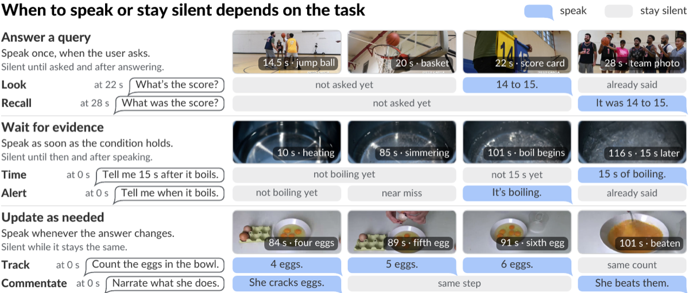
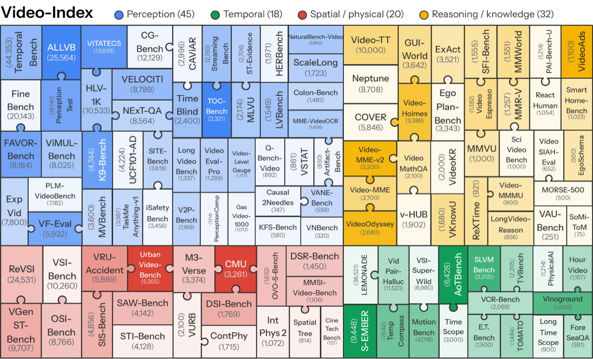
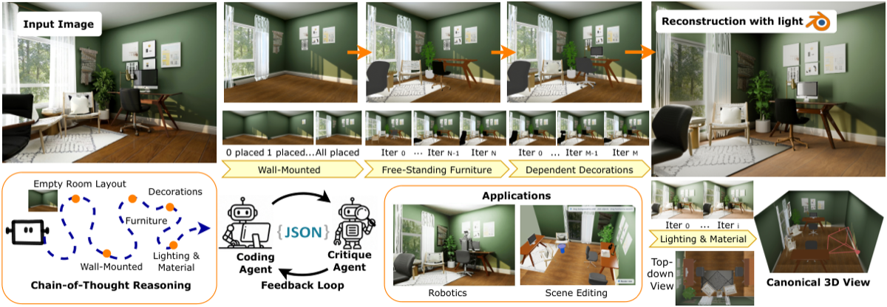
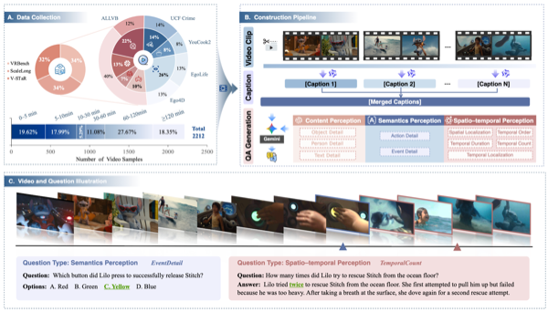
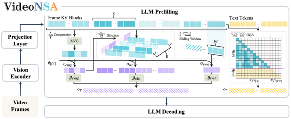
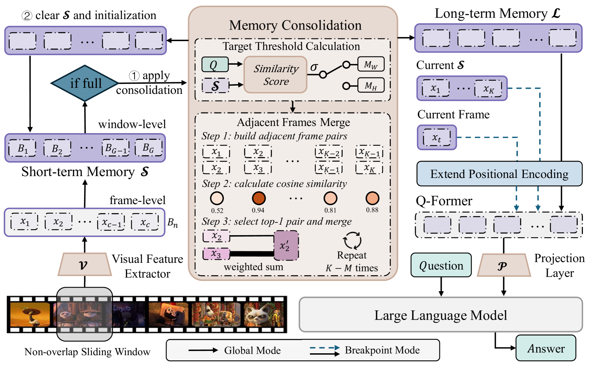
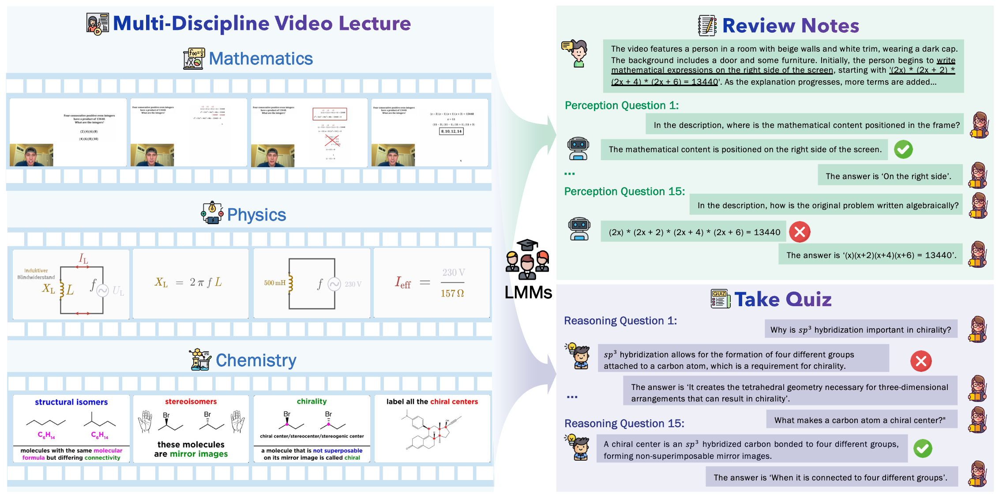
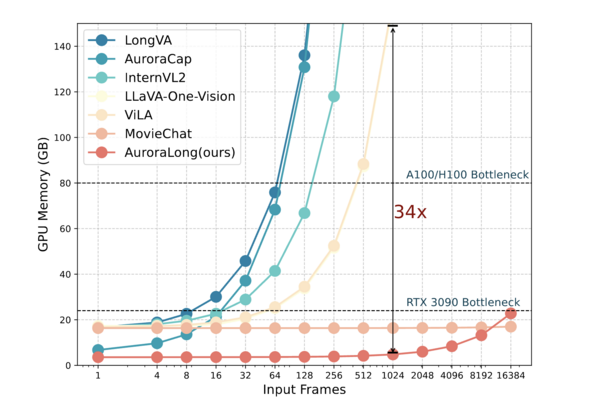
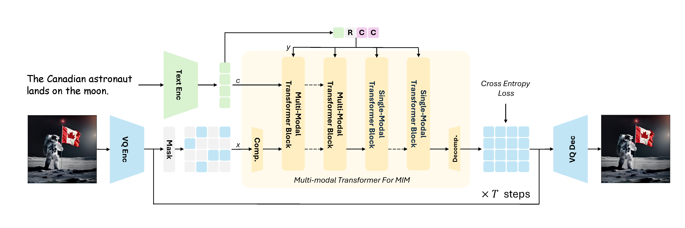

I am a first-year Ph.D. student in Computer and Information Science at the University of Pennsylvania, advised by Prof. Jiatao Gu. I received my master's degree from Zhejiang University and my bachelor's degree from Dalian University of Technology, and I was a visiting researcher at University of California, San Diego with Prof. Zhuowen Tu. My research centers on multimodal models and agents, with a focus on efficient long-sequence modeling, real-time interactive agents, and benchmarking and evaluation. I have co-organized workshops at CVPR 2024 and 2025.
I am looking for research internships for Summer 2027. Feel free to reach out at enxin.song@engineering.upenn.edu. I also welcome collaborations and research discussions; see my availability.
News
- Oct 2026 Two papers released on arXiv: InteractionBench, a real-time interaction benchmark for streaming video systems, and Video-Index, a curated meta-benchmark for video understanding.
- Sep 2026 HARMONY, hierarchical agentic reasoning for monocular image-to-scene synthesis, is released on arXiv.
- Aug 2026 Started my Ph.D. at the University of Pennsylvania, advised by Prof. Jiatao Gu.
- Jul 2026 One paper accepted by ACM MM 2026.
- Jan 2026 Our VideoNSA is accepted by ICLR 2026.
- Nov 2025 Selected (top 10%) to give a talk at the KAUST Rising Stars in AI Symposium 2026.
- Oct 2025 Video-MMLU received the Outstanding Paper Award at the ICCV 2025 Knowledge-Intensive Multimodal Reasoning Workshop, along with a travel grant.
- Oct 2025 We release VideoNSA, a hardware-aware native sparse attention mechanism for video understanding.
- Sep 2025 Invited talk at Lambda AI titled From Seeing to Thinking.
- Sep 2025 One paper accepted by ICCV 2025 KnowledgeMR Workshop.
- Aug 2025 Our paper MovieChat+: Question-aware Sparse Memory for Long Video Question Answering is accepted by IEEE TPAMI.
Availability
9 am to 6 pm Eastern Time. Happy to chat about research or collaborations in any open slot.
Loading…
Darker days have more open time. Pick a day to see the slots.
Most Read
What visitors read most on this site over the past 30 days, by page views.
- 01Video-IndexWhich video benchmarks still test watching, and the 840 items that do1.4kviews
- 02InteractionBenchDemo and leaderboard for real-time interaction on streaming video880views
- 03VideoNSALearned native sparse attention that scales to long video710views
- 04Video-MMLUA benchmark for knowledge-intensive lecture understanding480views
- 05CS Ph.D. ApplicationNotes and materials from my 2026 Fall application400views
Education
Research Experience
Invited Talks
-
Feb 2026
From Compression to Selection: Better and Longer Video UnderstandingKAUST Rising Stars in AI Symposium, Saudi Arabia · Slides
-
Oct 2025
Video-MMLU: A Massive Multi-Discipline Lecture Understanding BenchmarkWorkshop on Knowledge MR at ICCV 2025, Oahu, HI · Slides
- Sep 2025
Teaching
Selected Honors & Awards
- 2026
-
2025
Outstanding Paper Award, ICCV 2025 Knowledge-Intensive Multimodal Reasoning Workshop
-
2025
Lambda AI Cloud Credits Grant Sponsorship
-
2025
National Scholarship, Zhejiang University
-
2024
National Scholarship, Zhejiang University
-
2021
National Scholarship, Dalian University of Technology
Research Overview
My research centers on multimodal models and agents, with key areas of focus including:
-
Efficient Long-Sequence Modeling, scaling models to long and streaming inputs such as video with sparse attention, memory, token compression, and recurrent architectures.
-
Real-Time Interactive Agents, building systems that perceive continuous streams and decide when and how to respond.
- Deciding when to speak and when to stay silent as a video unfolds InteractionBench
- Hierarchical agentic reasoning that builds a scene step by step from one image HARMONY
-
Benchmarking and Evaluation, building benchmarks and evaluation toolkits that pose challenging real-world tasks, probe the boundaries of model capabilities, and provide insights for future improvement.
Selected Publications and Manuscripts



HARMONY reconstructs complete 3D indoor scenes from a single image by combining hierarchical agentic reasoning with geometry-based refinement.

Video*Bench benchmarks fine-grained video perception under a "think with videos" evaluation protocol.







AuroraLong uses a linear RNN language model with constant-size hidden states to handle arbitrary-length video inputs.



Blog
Occasional writing on research, tools, and things I find interesting.
{% assign sorted_blogs = site.blogs | sort: "date" | reverse %} {% if sorted_blogs.size > 0 %}